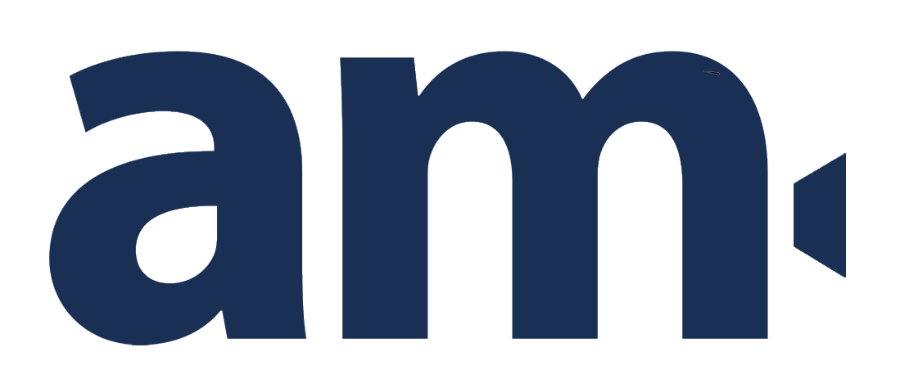

Film
Brand story
Ondernemersverhaal
Een filmische case met focus op sfeer, proces en persoonlijkheid.

Portfolio
Voor nu staat de structuur klaar. Wanneer je de juiste beelden en teksten doorgeeft, vullen we deze pagina met cases, categorieen en projectdetails.
Brand story
Een filmische case met focus op sfeer, proces en persoonlijkheid.
Fotografie
Rustige portretten voor websites, social media en campagnes.
Reportage
Verhalende beelden die de energie van een dag bewaren.
Content
Korte visuele formats voor online zichtbaarheid en herkenning.